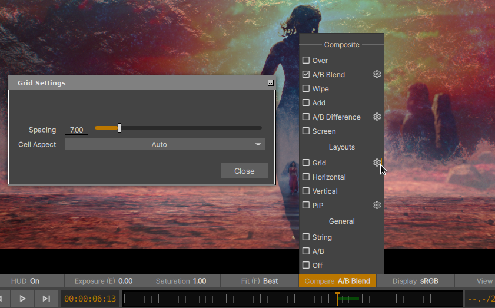

Compare Modes
{kind=link}

The xSTUDIO Compare Modes Menu
「Compare」と表示された Toolbar のボタンは、現在表示されている Playlist/SubSet/Contact Sheet または Sequence の Playhead に対する Compare モードを設定します。xSTUDIO のシンプルな Compare ワークフローを理解することは、アプリケーションを最大限に活用するために重要です。
Compare Mode |
Description |
|---|---|
Off |
比較対象の最初の Media 項目 / ビデオトラックのみが Viewport に表示されます |
A/B |
比較対象のすべての項目が読み込まれ、フレーム番号が整列されます。常に1つの項目のみが Viewport に表示されます。表示する項目を切り替えるには、1 … 9 のテンキーまたは Up/Down 矢印キーを使用します。直接的な視覚比較を容易にするため、このモードでは画面上のソースを瞬時に切り替えることができます。 |
String |
比較対象のすべての項目が時間軸上で一連の「つなぎ（String）」状態になり、選択された順序で Sequence として再生されます。このモードは、Sequence を表示している場合は効果がありません。 |
Grid |
比較対象のメディアが Viewport 内に Grid 状に自動配置されます。レイアウトの順序は、左から右、次に上から下へと並びます。Grid メニューオプションの横にある設定ボタンをクリックすると、Grid タイル間の間隔や項目の配置に使用される Aspect 値を変更できます。 |
Horizontal |
Grid モードに似ていますが、画像が1つの行に配置されます |
Vertical |
Grid モードに似ていますが、画像が1つの列に配置されます。 |
Wipe |
マウスポインターでドラッグできる画面上のハンドルを使用して、2枚の画像をワイプしながら比較できます。比較対象として3つ以上の項目が選択されている場合 (または 3つ以上の項目を持つ Contact Sheet や、3つ以上の表示可能なビデオトラックを持つ Sequence (Timeline) を使用している場合)、テンキーの 1, 2 … 9 を使用して、比較する 2枚の画像を選択できます。 |
A/B Difference |
A/B モードに似ており、比較対象の画像セットから2枚の画像が合成されます。A 画像のピクセル値から B 画像のピクセル値を引いた値を表す Luminance（輝度）画像として表示されます。 |
A/B Blend |
A/B モードに似ており、比較対象の画像セットから2枚の画像がシンプルなブレンド処理で合成されます。 |
Add |
比較対象の画像セットのすべての画像がシンプルな加算（Add）処理で合成されます。 |
Over |
比較対象の画像セットのすべての画像が「Over」処理で合成されます。これは、比較スタックの上位の画像が適切なマスクを持つアルファチャンネル（Alpha channel）を含んでいる場合にのみ有効です。このオプションは Sequence で使用する場合に特に強力で、たとえば トラック 2 がトラック 1 の上に合成されるため、トラック 2 に前景の項目を読み込み、トラック 1 に背景画像を配置することができます。 |
Screen |
比較対象の画像セットのすべての画像がスクリーン（Screen）処理で合成されます。 |
Note
比較する項目はいくつでも選択できます。では、たとえば2枚の画像を表示する A/B モードや Wipe モードではどのように動作するのでしょうか？答えは、1, 2…9 のテンキー（テンキーパッドではなく、メインの Keyboard の数字キー）を使って、比較する画像を切り替えることができます。比較する項目が 8 つあり、項目 4 と 5 を切り替えたい場合は、4 と 5 のキーを押すだけです。
Comparing Media in Playlists and Subsets
Playlist、Subset、Contact Sheet の概要については、:ref:`Playlists Interface <_playlist_panel>` セクションを参照してください。
Playlist や Subset での画像比較は、内部のメディアの選択状態によって動的に駆動されます。Media List Panel で選択された Media 項目が、現在の Compare モードに従って比較用に読み込まれます。Media 項目が選択された順序によって、Compare モードの並び順が決まります。そのため、たとえば「Over」モードを使用している場合、Media List で 11 番目の Media 項目を選択し、その後に 10 番目の Media 項目を選択すると、Viewport 内では 11 番目の項目が 10 番目の項目の上に合成されます。
Comparing Media in Contact Sheets
Contact Sheet が Playlist や Subset と異なる点は、Media 項目の選択状態に関わらず、Contact Sheet 内のすべてのメディアが比較用に読み込まれる点のみです。そのため、たとえばいくつかの Media 項目を Viewport 内に Grid 状に配置したい場合は、それらの Media 項目を Contact Sheet に追加して Compare モードを「grid」に設定します。その後、Contact Sheet を表示すると、その Grid ビューが得られます。
Comparing Media in Sequences (Timelines)
xSTUDIO の Compare モードシステムは、マルチトラックの編集に適用した際、いくつかの便利な機能を提供します：
Compare モードが Off に設定されている場合、Viewport には Timeline の編集のベイクダウン（最終合成結果）のみが表示され、Timeline 内の任意のフレームにおいて最上位の表示可能なトラックがビデオとして提供されます。
Compare モードが Off 以外に設定されている場合、アクティブな各ビデオトラックが個別に比較用に読み込まれます。したがって、たとえば Compare モードが Grid に設定されており、Sequence に 4 つの独立したビデオトラックがある場合、Viewport 内に 4 枚の画像が Grid 状に配置されて表示されます。それぞれの画像は、各ビデオトラックの現在のフレームになります。
Note
Compare モードを Off または String 以外に設定してメディアを比較する場合、選択したすべてのメディア/ビデオトラックのフレームを同時にデコードして保存するため、再生中にコンピューターの負荷が高くなります。xSTUDIO はシステムの性能を最大限に引き出すように最適化されているため、多くの場合、パフォーマンスに影響を与えることなく複数のソースを比較できますが、一度にあまりにも多くのソースを比較しようとすると、最終的に再生パフォーマンスに影響が及ぶ可能性があります。
Compare Modes Walkthrough
この短いビデオでは、Compare モードが実際に動作している様子を紹介しています（すべてを網羅したデモではありません）。